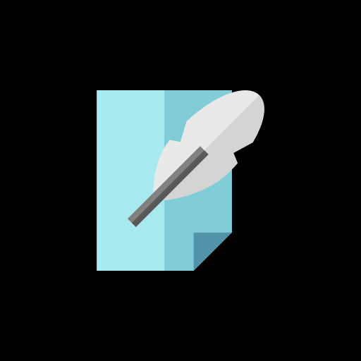

Code Editor
install
open editor
Note: for firefox,safari the install button will not work
please follow these steps to install
1. click ⋮ options
2.click install in your options
The Code Editor allows you to write programs on tablet, mobile.
Features
Syntax highlighting for over 110 languages
Over 20 themes
Automatic indent and outdents
Highlight matching parentheses
Displays hidden characters
Multiple cursors and selections
Search and replace with regular expressions
line wrapping
Cut, copy, and paste functionality
Note
please grant the presistant storage permission if asked by the browser.
you can code the file which are lessthan 1200kb because of web storage issues.
please download the files regularly so you code will be safe
Open Source License